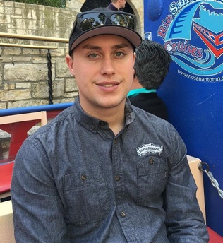

Marek Gutt-Mostowy. Founder and CEO.
Marek Gutt-Mostowy. Founder and CEO.
Experience:
6 years experience in large scale R&D complex mechanical, thermodynamical and controls projects.
1 year experience as Controls Team Leader at rLoop.
 Joakim Forslund. Co-founder and VP.
Joakim Forslund. Co-founder and VP.
Experience:
3 years as software engineer building and designing data analytics and processing systems for telecom.
1 year developing image processing system for detecting light sources (such as laser pointers or flashlights) with high accuracy in real-time using COTS web-cameras and laptops. Project was displayed at world’s largest digital arts festival, Lumiere 2016 in London, as one of the main attractions.
6 months as overall lead for software development in rLoop. Member for 1.5 years total.
1.5 years as air traffic controller.
Adrian Kelly.
Experience:
4 years ARM microcontroller programming, machining
3 years experience with Lithium Polymer batteries, brushless motor controller design, circuit board layout
1 year experience as electrical team member of rLoop, 3 months lead for electrical team.
 Paul Le Henaff.
Paul Le Henaff.
Experience:
3.5 Years developing web applications.
Designed and manufactured a Pitot Static velocity probe as well as the electronic sensor system (B. Eng thesis).
Designed a light amphibious aircraft that can transport a 4x4 vehicle - Produced CAD models and analysis of tail section (B. Eng final year group project).
1.5 years working on rLoop software team. Worked on groundstation software and made contributions to embedded.
 Alessandro Caratelli.
Alessandro Caratelli.
Experience:
3 years experience in digital Microelectronics and systems design (CERN). 1.5 year experience in FPGA firmware and embedded systems (CERN). 1 year experience as controls team member of rLoop.
 André Kunze.
André Kunze.
Experience:
7 years at Karlsruhe Institute of Technology, with ~6 of those years as the responsible engineer for all the electrical systems of a high temperature and high pressure helium cooling research facility in the field of nuclear fusion technology. The work involved design and conduction of experiments with high heat flux on test objects inside large vacuum chambers.
1 year at rLoop, working mostly on numerical simulation of the eddy brake and trajectory simulations, as well as on passive magnet ski designs.
 Dario Santandrea.
Dario Santandrea.
Experience:
3 years of experience in R&D international organisation. Mechanical, thermal, fluidodynamic design and manufacturing. Cooling system. Process engineering, CAD and FEM, Cryogenics, Problem solving.
Three year at CERN, rLoop Thermal leader Volunteer for since march 2016 months.
Amir Khan.
Experience:
Designed a new form of elastocaloric cooling system; patent pending.
Designed an automatically controlled warehouse management robot for the largest e-commerce client in India.
5 years of experience in designing high performance vehicles including defence projects.
 Wiktor Dowgird.
Wiktor Dowgird.
Experience:
2 years of experience on construction sites in Poland as a setting out engineer and team lead. Carried out diverse measurements, CAD documentation analysis and data preparation on constructions such as Cracow Airport or Power Station in Opole. 1 year experience of a rail survey and 1 year experience of GIS analysis.
Jayce Steinberg.
Experience:
10 Years experience working with mechanical engineering firms developing advanced Process Piping Systems, Controls, Sensors, and proprietary designs for the Food and Beverage Processing Industry.
10 years experience working with new mechanical designs and automated control systems. Working with inert gas systems, High pressure systems, with extreme high and low temperatures, also highly caustic and acidic chemical systems.
2 years experience working with Jones Aviation and Ag-Viation building and designing custom parts aircraft.
Gianmarco Sahragard-Monfared.
Experience:
2 years experience as a lecturer in the mechanical engineering department at California State University, Sacramento. Courses taught include mechanical behaviours of materials, project engineering, dynamics, probability/statistics, and engineering economics.
Certified SolidWorks Associate
Publications:
Morpheus Lander Liquid Propellant Fluid Slosh Modeling and Simulation, AIAA.
Orion Multipurpose Crew Vehicle Parachute Dynamics Analysis, CSUS
 Piotr Krzemiński.
Piotr Krzemiński.
Experience:
2 years experience in heading up campaigns as a Project Manager in advertising agency. 8 years experience in coordinating international training courses and youth exchanges within european funds.
 Sylwia Wojnarska.
Sylwia Wojnarska.
Experience:
Master in Mechanical Engineering with Specialization of Aero and Hydro-dynamics from Ecole polytechnique fédérale de Lausanne
Currently working as Mechanical Systems Design Engineer at Jet Aviation Completions Center in Basel, Switzerland
Experiences: Internships at CERN, doing CFD studies of different problems connected to flow and heat transfer. Master Thesis research internship at Georgia Institute of Technology also based on CFD methodology. 6 months of work experience in Procter & Gamble as a Process Engineer connected with Project Management.
 Michal Czech.
Michal Czech.
Experience:
Master in Mechanical Engineering with specialization of Automatic Control and Robotics from Cracow University of Technology
Working as Design Engineer at CERN in Geneve, Switzerland. 4 years at CERN - providing transport for all the equipment in HL LHC project ( 3Ddesign & calculation, ordering, consulting and implementation of transport means). designing online/offline robot trajectories. Overall solid experience in product design and development as well as project management.
Other members
Jonathan Dweck
Alex Gaesser
Sean